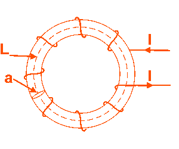
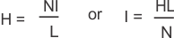
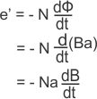
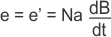
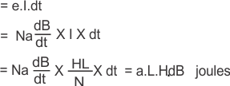
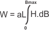

Hysteresis Eddy Current Iron or Core Losses and Copper Loss in Transformer
• Copper Loss
• Core Losses
Hysteresis Loss in Transformer
• Physical Explanation
• Mathematical Explanation
• Determination
What is Eddy Current Loss ?
Losses in Transformer
As the electrical transformer is a static device, mechanical loss in transformer normally does not come into picture. We generally consider only electrical losses in transformer. Loss in any machine is broadly defined as difference between input power and output power.
When input power is supplied to the primary of transformer, some portion of that power is used to compensate core losses in transformer i.e. Hysteresis loss in transformer and Eddy electric current loss in transformer core and some portion of the input power is lost as I2R loss and dissipated as heat in the primary and secondary windings, because these windings have some internal resistance in them. The first one is called core loss or iron loss in transformer and the later is known as ohmic loss or copper loss in transformer. Another loss occurs in transformer, known as Stray Loss, due to Stray fluxes link with the mechanical structure and winding conductors.
Copper Loss in Transformer
Copper loss is I2R loss, in primary side it is I12R1 and in secondary side it is I22R2 loss, where I1 & I2 are primary & secondary electric current of transformer and R1 & R2 are resistances of primary & secondary winding. As the both primary & secondary currents depend upon load of transformer, copper loss in transformer vary with load.
Core Losses in Transformer
Hysteresis loss and eddy current loss, both depend upon magnetic properties of the materials used to construct the core of transformer and its design. So these losses in transformer are fixed and do not depend upon the load current. So core losses in transformer which is alternatively known as iron loss in transformer can be considered as constant for all range of load.
Hysteresis loss in transformer is denoted as,
Eddy electric current loss in transformer is denoted as,
Where, Kh = Hysteresis constant.
Ke = Eddy electric current constant.
Kf = form constant.
Copper loss can simply be denoted as,
Where, IL = I2 = load of transformer, and R2′ is the resistance of transformer referred to secondary.
Now we will discuss Hysteresis loss and Eddy electric current loss in little bit more details for better understanding the topic of losses in transformer
Hysteresis Loss in Transformer
Hysteresis loss in transformer can be explained in different ways. We will discuss two of them, one is physical explanation and the other is mathematical explanation.
Physical Explanation of Hysteresis Loss
The magnetic core of transformer is made of ′Cold Rolled Grain Oriented Silicon Steel′. Steel is very good ferromagnetic material. This kind of materials are very sensitive to be magnetized. That means, whenever magnetic flux would pass through, it will behave like magnet. Ferromagnetic substances have numbers of domains in their structure. Domains are very small regions in the material structure, where all the dipoles are paralleled to same direction. In other words, the domains are like small permanent magnets situated randomly in the structure of substance. These domains are arranged inside the material structure in such a random manner, that net resultant magnetic field of the said material is zero. Whenever external magnetic field or mmf is applied to that substance, these randomly directed domains get arranged themselves in parallel to the axis of applied mmf. After removing this external mmf, maximum numbers of domains again come to random positions, but some of them still remain in their changed position. Because of these unchanged domains, the substance becomes slightly magnetized permanently. This magnetism is called " Spontaneous Magnetism". To neutralize this magnetism, some opposite mmf is required to be applied. The magneto motive force or mmf applied in the transformer core is alternating. For every cycle due to this domain reversal, there will be extra work done. For this reason, there will be a consumption of electrical energy which is known as Hysteresis loss of transformer.
Mathematical Explanation of Hysteresis Loss in Transformer
Determination of Hysteresis Loss

Consider a ring of ferromagnetic specimen of circumference L meter, cross - sectional area a m2 and N turns of insulated wire as shown in the picture beside,
Let us consider, the electric current flowing through the coil is I amp,
Magnetizing force,

Let, the flux density at this instant is B,
Therefore, total flux through the ring, Φ = BXa Wb
As the electric current flowing through the solenoid is alternating, the flux produced in the iron ring is also alternating in nature, so the emf (e′) induced will be expressed as,


According to Lenz,s law this induced emf will oppose the flow of electric current, therefore, in order to maintain the electric current I in the coil, the source must supply an equal and opposite emf. Hence applied emf ,

Energy consumed in short time dt, during which the flux density has changed,

Thus, total work done or energy consumed during one complete cycle of magnetism,

Now aL is the volume of the ring and H.dB is the area of elementary strip of B - H curve shown in the figure above,

= total area enclosed by Hysteresis Loop.
Therefore, Energy consumed per cycle = volume of the ring X area of hysteresis loop.
In the case of transformer, this ring can be considered as magnetic core of transformer. Hence, the work done is nothing but the electrical energy loss in transformer core and this is known as hysteresis loss in transformer.
What is Eddy Current Loss ?
In transformer, we supply alternating electric current in the primary, this alternating electric current produces alternating magnetizing flux in the core and as this flux links with secondary winding, there will be induced voltage in secondary, resulting electric current to flow through the load connected with it. Some of the alternating fluxes of transformer; may also link with other conducting parts like steel core or iron body of transformer etc. As alternating flux links with these parts of transformer, there would be a locally induced emf. Due to these emfs, there would be currents which will circulate locally at that parts of the transformer. These circulating electric current will not contribute in output of the transformer and dissipated as heat. This type of energy loss is called eddy current loss of transformer. This was a broad and simple explanation of eddy current loss. The detail explanation of this loss is not in the scope of discussion in that chapter.
 by
by